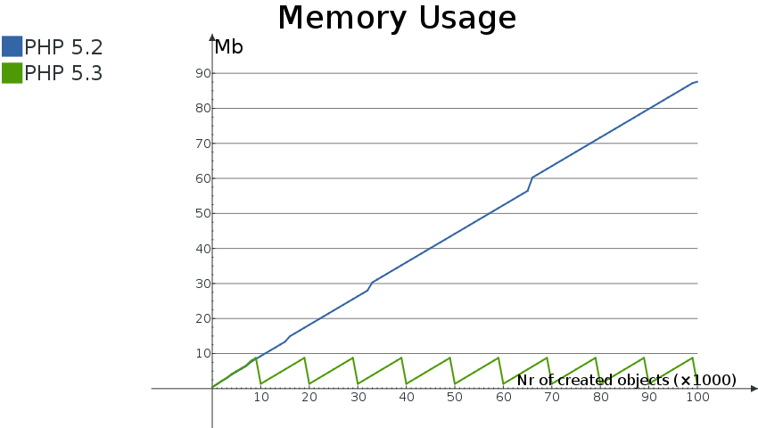

在上一节我们已经简单的提到：回收可能根有细微的性能上影响，但这是把PHP 5.2与PHP 5.3比较时才有的。尽管在PHP 5.2中，记录可能根相对于完全不记录可能根要慢些，而PHP 5.3中对 PHP run-time 的其他修改减少了这个性能损失。
这里主要有两个领域对性能有影响。第一个是内存占用空间的节省，另一个是垃圾回收机制执行内存清理时的执行时间增加(run-time delay)。我们将研究这两个领域。
首先，实现垃圾回收机制的整个原因是为了，一旦先决条件满足，通过清理循环引用的变量来节省内存占用。在PHP执行中，一旦根缓冲区满了或者调用gc_collect_cycles() 函数时，就会执行垃圾回收。在下图中，显示了下面脚本分别在PHP 5.2 和 PHP 5.3环境下的内存占用情况，其中排除了脚本启动时PHP本身占用的基本内存。
示例 #1 Memory usage example
<?php
class Foo
{
public $var = '3.14159265359';
public $self;
}
$baseMemory = memory_get_usage();
for ( $i = 0; $i <= 100000; $i++ )
{
$a = new Foo;
$a->self = $a;
if ( $i % 500 === 0 )
{
echo sprintf( '%8d: ', $i ), memory_get_usage() - $baseMemory, "\n";
}
}
?>
在这个很理论性的例子中，我们创建了一个对象，这个对象中的一个属性被设置为指回对象本身。在循环的下一个重复(iteration)中，当脚本中的变量被重新复制时，就会发生典型性的内存泄漏。在这个例子中，两个变量容器是泄漏的(对象容器和属性容器)，但是仅仅能找到一个可能根：就是被unset的那个变量。在10,000次重复后(也就产生总共10,000个可能根)，当根缓冲区满时，就执行垃圾回收机制，并且释放那些关联的可能根的内存。这从PHP 5.3的锯齿型内存占用图中很容易就能看到。每次执行完10,000次重复后，执行垃圾回收，并释放相关的重复使用的引用变量。在这个例子中由于泄漏的数据结构非常简单，所以垃圾回收机制本身不必做太多工作。从这个图表中，你能看到 PHP 5.3的最大内存占用大概是9 Mb，而PHP 5.2的内存占用一直增加。
垃圾回收影响性能的第二个领域是它释放已泄漏的内存耗费的时间。为了看到这个耗时时多少，我们稍微改变了上面的脚本，有更多次数的重复并且删除了循环中的内存占用计算，第二个脚本代码如下：
示例 #2 GC性能影响
<?php
class Foo
{
public $var = '3.14159265359';
public $self;
}
for ( $i = 0; $i <= 1000000; $i++ )
{
$a = new Foo;
$a->self = $a;
}
echo memory_get_peak_usage(), "\n";
?>运行这个脚本两次，一次将 zend.enable_gc 设置打开，一次关闭。
示例 #3 执行以上脚本
time php -dzend.enable_gc=0 -dmemory_limit=-1 -n example2.php # and time php -dzend.enable_gc=1 -dmemory_limit=-1 -n example2.php
在我的机器上，第一个命令持续执行时间大概为10.7秒，而第二个命令耗费11.4秒。时间上增加了7%。然而，执行这个脚本时内存占用的峰值降低了98%，从931Mb 降到 10Mb。这个基准不是很科学，或者并不能代表真实应用程序的数据，但是它的确显示了垃圾回收机制在内存占用方面的好处。好消息就是，对这个脚本而言，在执行中出现更多的循环引用变量时，内存节省的更多的情况下，每次时间增加的百分比都是7%。
在PHP内部，可以显示更多的关于垃圾回收机制如何运行的信息。但是要显示这些信息，你需要先重新编译PHP使benchmark和data-collecting code可用。你需要在按照你的意愿运行./configure前，把环境变量CFLAGS设置成-DGC_BENCH=1。下面的命令串就是做这个事：
示例 #4 重新编译PHP以启用GC benchmarking
export CFLAGS=-DGC_BENCH=1 ./config.nice make clean make
当你用新编译的PHP二进制文件来重新执行上面的例子代码，在PHP执行结束后，你将看到下面的信息：
示例 #5 GC 统计数据
GC Statistics
-------------
Runs: 110
Collected: 2072204
Root buffer length: 0
Root buffer peak: 10000
Possible Remove from Marked
Root Buffered buffer grey
-------- -------- ----------- ------
ZVAL 7175487 1491291 1241690 3611871
ZOBJ 28506264 1527980 677581 1025731
主要的信息统计在第一个块。你能看到垃圾回收机制运行了110次，而且在这110次运行中，总共有超过两百万的内存分配被释放。只要垃圾回收机制运行了至少一次，根缓冲区峰值(Root buffer peak)总是10000.
通常，PHP中的垃圾回收机制，仅仅在循环回收算法确实运行时会有时间消耗上的增加。但是在平常的(更小的)脚本中应根本就没有性能影响。
然而，在平常脚本中有循环回收机制运行的情况下，内存的节省将允许更多这种脚本同时运行在你的服务器上。因为总共使用的内存没达到上限。
这种好处在长时间运行脚本中尤其明显，诸如长时间的测试套件或者daemon脚本此类。同时，对通常比Web脚本运行时间长的» PHP-GTK应用程序，新的垃圾回收机制，应该会大大改变一直以来认为内存泄漏问题难以解决的看法。